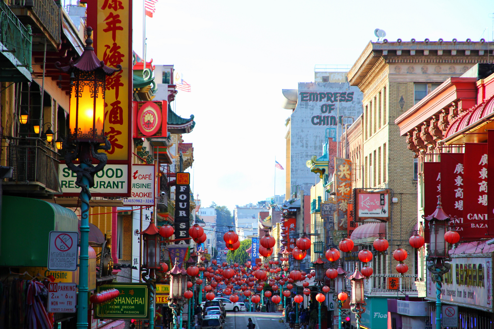

Chinatown in San Francisco is a vibrant and culturally rich neighborhood that offers a unique experience of Chinese heritage, traditions, and cuisine. As one of the oldest and most iconic Chinatowns in North America, it attracts visitors from all over the world.
Explore the bustling streets of Chinatown and immerse yourself in the vibrant atmosphere filled with colorful decorations, Chinese architecture, and the aroma of delicious food. Discover hidden alleyways, traditional shops, and markets selling a wide range of goods, including authentic Chinese arts and crafts, clothing, and herbal remedies.
Chinatown is home to numerous landmarks and attractions. Visit the Dragon Gate, a grand entrance adorned with intricate artwork that marks the entrance to the neighborhood. Explore the ornate temples, such as the Tin How Temple and the Old St. Mary's Church, which showcase the rich cultural and religious heritage of the community.
Don't miss the opportunity to indulge in the culinary delights of Chinatown. Sample a variety of authentic Chinese dishes, from dim sum to Peking duck, in the neighborhood's restaurants and eateries. Visit the bustling food markets to explore the fresh produce, spices, and ingredients used in Chinese cuisine.
Chinatown also hosts vibrant festivals and events throughout the year, such as the Chinese New Year Parade, which features dragon dances, colorful floats, and traditional performances. Experience the lively celebrations and immerse yourself in the festive spirit of Chinese culture.
As you wander through the streets of Chinatown, you'll encounter fascinating cultural sites, captivating history, and a fusion of Eastern and Western influences. The unique atmosphere and charm of Chinatown make it a must-visit destination for anyone interested in exploring diverse cultures and experiencing the flavors of China.